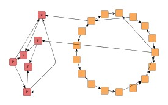
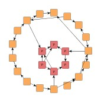
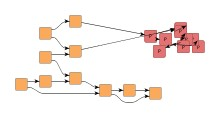
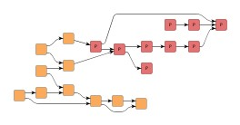
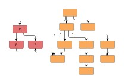
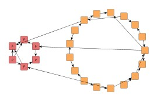

| Partial Layout | ||
|---|---|---|
| Prev | Chapter 5. Automatic Graph Layout | Next |
This section presents the partial layout concept.
Related to incremental graph layout, the yFiles library also provides support for partial graph layout. This concept is a perfect fit for incremental scenarios where subsequently added parts should be arranged so that they fit best possible into a given diagram without applying any changes to the already existing layout.
Partial layout supports arranging user-specified parts of a diagram, the so-called partial elements. In a first step, partial elements are combined to form subgraph components. Subsequently, these are arranged and afterwards placed so that the remainder of the diagram, which consists of the so-called fixed elements, is not affected.
Placing a subgraph component predominantly means finding a good position that both meets certain proximity criteria and offers enough space to accommodate the subgraph component.
Figure 5.92. Sample results of partial layout
|

|

|
| Original circular layout plus partial nodes (emphasized). | Partial nodes placed as a single subgraph component. |
|

|

|
| Original hierarchical layout (left-to-right orientation) plus partial nodes (emphasized). | Partial nodes placed as a single subgraph component integrate well into the diagram. |
Compared to incremental layout, the main advantage of partial layout is that it can deal with diagrams of arbitrary origin and layout style, and that the existing layout of the fixed parts of a diagram is left completely unaltered.
Class PartialLayouter enables layout
of user-specified, distinct parts of a diagram without altering the existing layout
of the remainder of the diagram.
It can be used with flat graphs as well as grouped graphs.
enables layout
of user-specified, distinct parts of a diagram without altering the existing layout
of the remainder of the diagram.
It can be used with flat graphs as well as grouped graphs.
The subset of graph elements that shall be processed (the partial elements) can
be specified using the data provider keys PARTIAL_NODES_DPKEY and PARTIAL_EDGES_DPKEY
and PARTIAL_EDGES_DPKEY .
Note that any edge that is incident to a partial node will implicitly be treated
as a partial element, too.
.
Note that any edge that is incident to a partial node will implicitly be treated
as a partial element, too.
The setComponentAssignmentStrategy(byte) method controls which strategy is used to form the subgraph components from the
set of partial nodes in the graph.
For each of the subgraph components a layout is calculated (using the core layout algorithm)
and it is then placed according to the specified Subgraph Component Placement.
Available options are
method controls which strategy is used to form the subgraph components from the
set of partial nodes in the graph.
For each of the subgraph components a layout is calculated (using the core layout algorithm)
and it is then placed according to the specified Subgraph Component Placement.
Available options are
COMPONENT_ASSIGNMENT_STRATEGY_CLUSTERING |
|
| Description | A natural clustering algorithm is used to form the subgraph components. Partial nodes of the same cluster are assigned to the same subgraph component. |
COMPONENT_ASSIGNMENT_STRATEGY_CONNECTED |
|
| Description | All partial nodes of a connected component are assigned to the same subgraph component. |
COMPONENT_ASSIGNMENT_STRATEGY_SINGLE |
|
| Description | Each partial node forms a subgraph component of its own. Note that there is no core layout algorithm applied to a single node subgraph component. |
COMPONENT_ASSIGNMENT_STRATEGY_CUSTOMIZED |
|
| Description |
The mapping from partial nodes to subgraph components will be given by the user.
To specify the mapping, a data provider holding such supplemental layout data must
be bound to the graph.
The data provider is expected to be registered with the graph using key
COMPONENT_ASSIGNMENT_DPKEY Note that subgraph components cannot be assigned partial nodes that are in different group nodes or different partition cells. |
Figure 5.93, “Effects of component assignment strategies” shows the outcome of partial layout calculation using different assignment strategies to form the subgraph component(s) from a set of partial nodes.
Figure 5.93. Effects of component assignment strategies
|

|
 |
|
One subgraph component formed using COMPONENT_ASSIGNMENT_STRATEGY_CONNECTED |
Each partial node becomes a subgraph component of its own when using COMPONENT_ASSIGNMENT_STRATEGY_SINGLE |
| Core Layout | |
| API | void setCoreLayouter(Layouter layouter) |
| Description | Determines the actual layout algorithm that is used for each single subgraph component. |
The core layout algorithm can also be set at creation time:
// Setting the core layout algorithm right away. PartialLayouter pl = new PartialLayouter(new CircularLayouter());
| Subgraph Component Placement | |
| API | void setPositioningStrategy(byte positioningStrategy) |
| Description |
Determines how to place each subgraph component after layout calculation. Subgraph components are placed in a way that they do not overlap with each other or with the fixed remainder of the diagram. When Consider Node Alignment is enabled, the resulting placement is further refined.
|
Figure 5.94, “Different placement for subgraph components” shows how a set of partial nodes (emphasized nodes to the left) is placed as a single subgraph component close to its original position, respectively close to its neighbors. The original circular layout of the diagram (the fixed elements) is left unaltered. Note that subgraph component is laid out using circular layout, too.
Figure 5.94. Different placement for subgraph components
|

|
||
| Original circular layout plus additional nodes (emphasized). | Partial nodes placed (as a single subgraph component) close to initial position... | ...close to their neighbors. |
| Consider Node Alignment | |
| API | void setConsiderNodeAlignment(boolean considerNodeAlignment) |
| Description | Specifies whether or not nodes should be aligned. If set to true, the algorithm tries to center-align nodes from subgraph components with nodes from the fixed remainder of the graph. |
Partial layout with and without node alignment enabled is illustrated in Figure 5.95, “Node alignment”.
The edge routing style that is used for routing partial edges as well as edges between
different subgraph components (so-called inter-edges) can be specified using the
setEdgeRoutingStrategy(byte) method.
Available options are
method.
Available options are
EDGE_ROUTING_STRATEGY_ORGANIC |
|
| Description | Each edge path will be routed as a straight line or a curved line. Uses class OrganicEdgeRouter. |
EDGE_ROUTING_STRATEGY_ORTHOGONAL |
|
| Description | Each edge path will be routed in an orthogonal style, i.e. only vertical and horizontal line segments will be used. Uses class EdgeRouter. |
EDGE_ROUTING_STRATEGY_OCTILINEAR |
|
| Description | Each edge path will be routed using octilinear routing style, i.e. line segments where the slope is a multiple of 45 degree will be used. Uses class EdgeRouter. |
EDGE_ROUTING_STRATEGY_STRAIGHTLINE |
|
| Description | Each edge path will be routed as a straight line connecting the start node and end node. |
EDGE_ROUTING_STRATEGY_AUTOMATIC |
|
| Description | Tries to determine whether the edge routing style in the fixed remainder of the graph is orthogonal or not. If so, edge paths will be routed orthogonally, otherwise straight-line. |
| Minimal Node Distance | |
| API | void setMinimalNodeDistance(int distance) |
| Description | Determines the minimal distance between subgraph components as well as between a subgraph component and any of its fixed neighbors. |
| Maximal Duration | |
| API | void setMaximalDuration(long duration) |
| Description | Sets the preferred maximum duration of the layout process in milliseconds. By default, the algorithm runs without time restriction. Decreasing this value gives better control over the runtime at the cost of layout quality. |
PartialLayouter supports layout of partial elements in grouped graphs. Conceptually, though, if a group node belongs to the set of fixed elements, then any children that are partial nodes require the geometry of the group node to be spacious enough to accommodate the resulting layout of the subgraph components.
Figure 5.96, “Support for partial layout within a group node” shows the result of a partial layout within a group node that itself belongs to the set of fixed elements. In particular, this means that the group node's geometry will not be altered, i.e., neither its size nor its position is allowed to change. The quality of a partial layout in such a situation depends to a great extent on the available space within the group node.
An existing layout where some nodes lack proper alignment can be improved by marking the nodes as partial, setting property Subgraph Component Assignment Strategy to COMPONENT_ASSIGNMENT_STRATEGY_SINGLE, and enabling Consider Node Alignment.
Layout module PartialLayoutModule.java shows configuration aspects of PartialLayouter and can also be used to interactively explore the effects of different settings.
The following tutorial demo applications show specific setup of PartialLayouter with regard to a certain layout style. The demos concentrate on achieving layout results that simulate the respective style best:
Class PartialLayouter knows a number of data provider keys which are used to retrieve supplemental layout data for a graph's elements. The data is bound to the graph by means of a data provider which is registered using a given look-up key. Table 5.66, “Data provider look-up keys” lists all look-up keys that PartialLayouter tests during the layout process in order to query supplemental data.
Binding supplemental layout data to a graph is described in the section called “Providing Supplemental Layout Data”.
Table 5.66. Data provider look-up keys
| Key | Element Type | Value Type | Description |
|---|---|---|---|
| PARTIAL_NODES_DPKEY |
Node | boolean | For each node a boolean value indicating whether it is a so-called partial node or not. Note that the set of partial nodes also induces partial edges: an edge that is incident to a partial node is implicitly treated as a partial edge. |
| PARTIAL_EDGES_DPKEY |
Edge | boolean | For each edge a boolean value indicating whether it is a so-called partial edge or not. Note that an edge that is incident to a partial node is implicitly treated as a partial edge, too. |
| COMPONENT_ASSIGNMENT_DPKEY |
Node | Object | For each node an arbitrary Object indicating the subgraph component it is affiliated with. |
|
Copyright ©2004-2015, yWorks GmbH. All rights reserved. |